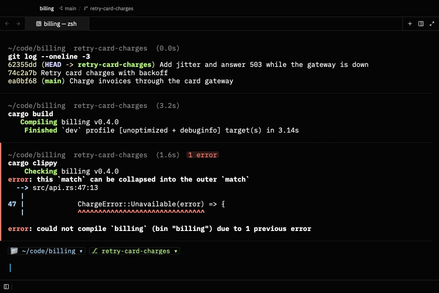
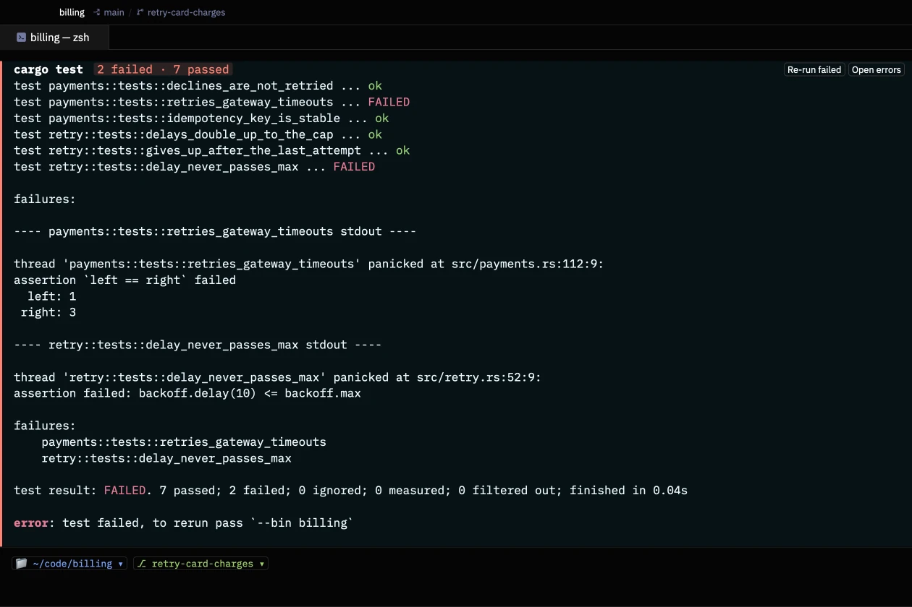
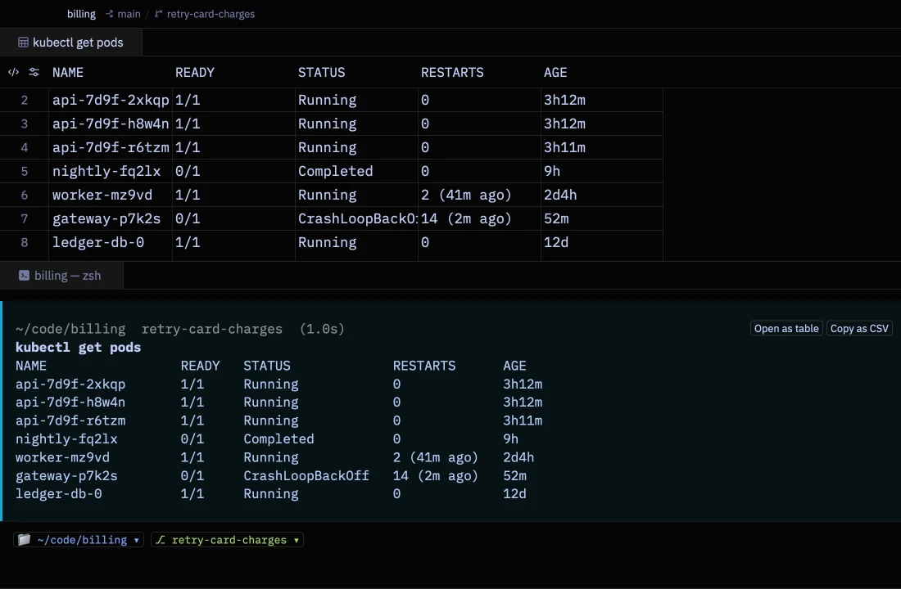
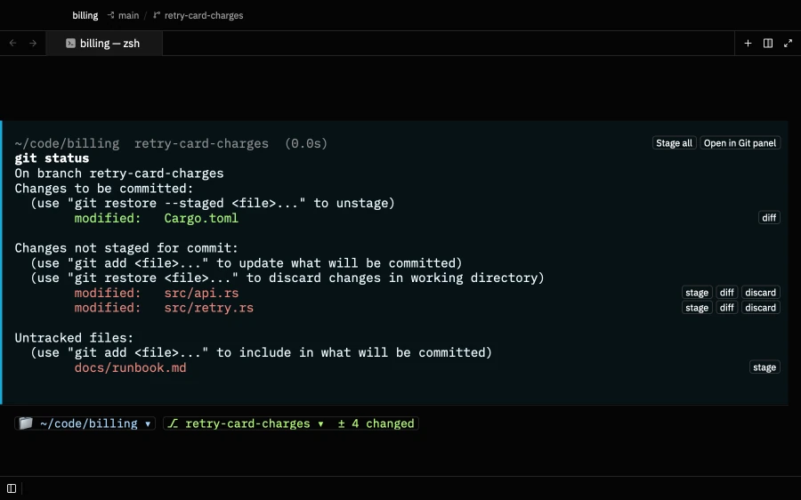
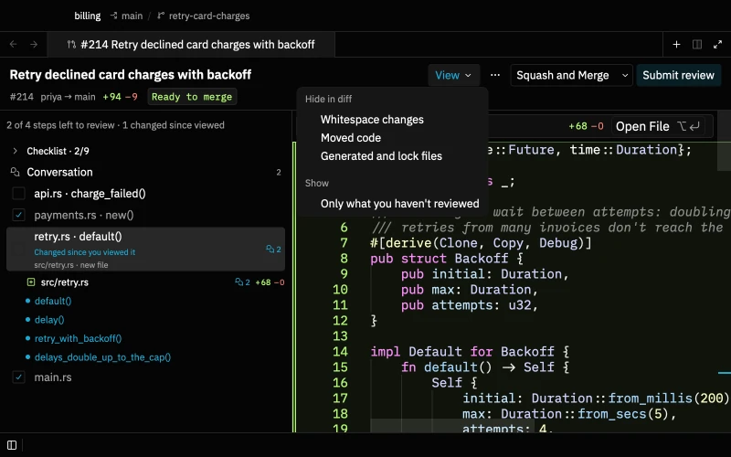
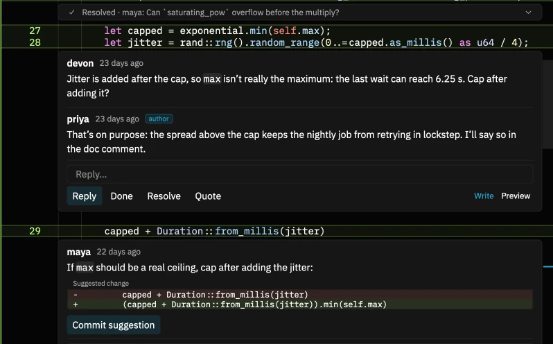
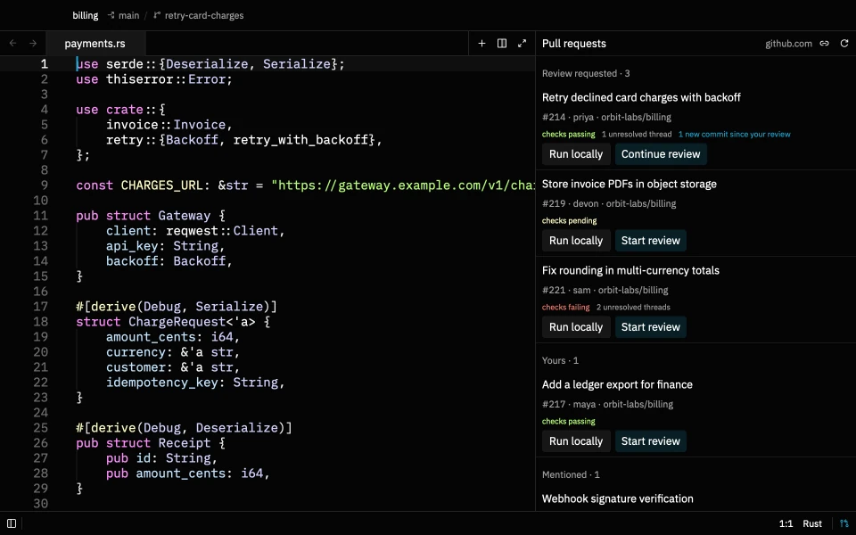
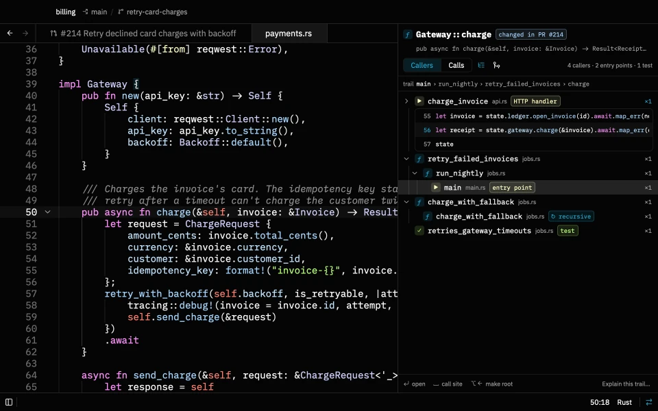
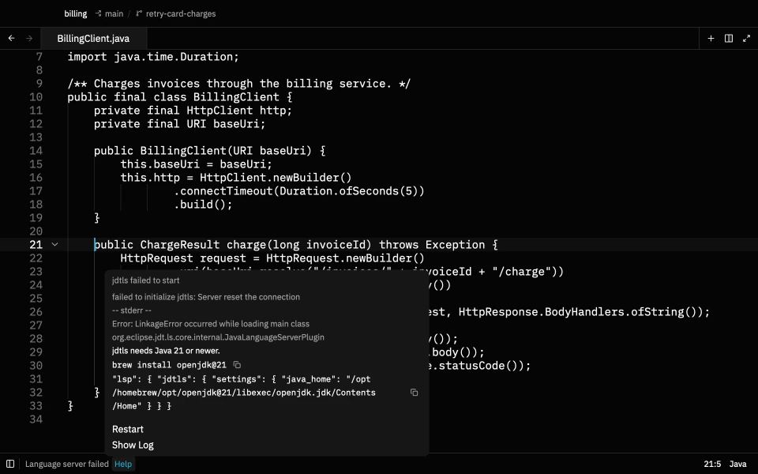

Every command is a block
Where it ran, on which branch, how long it took and whether it worked. Copy the command or the output, or run it again.
Photon is where you run commands, write code and check changes: your own, your teammates' and your AI agents'. It's native, starts in a third of a second, and stays quiet when you aren't using it.
$ brew tap heapworks-in/photon && brew install photon

Every command is a block you can copy, rerun and act on.
Pull requests in reading order, with comments, AI review and merge.
Claude Code and Codex on your own plans, checked turn by turn.
Markdown for reading, with Mermaid and Excalidraw built in.
Call trees, navigation without a server, and help when one breaks.
No account, no telemetry, nothing running when you aren't.
Terminal
Every command and its output become one block, so you never scroll through noise to find what you need.

Where it ran, on which branch, how long it took and whether it worked. Copy the command or the output, or run it again.

cargo test, pytest and jest are summarised as passed and failed. Rerun only the failures, and press F8 to jump to each error.

JSON, kubectl get and docker ps output open as a table, or copy as CSV.

Stage, diff or discard each file right where git status listed it.
src/main.rs:42 in any output to open that line beside the terminal.Code review
More code is written by agents than ever, so more of your day is reviewing it. Photon splits a change into steps, shows what each one touches, and lets you comment, check and merge without leaving the editor.

Steps follow the call graph: helpers first, then their callers, tests last. Each step shows what changed and how many open comments it has.

Viewed marks belong to the push you reviewed. When the author pushes again, changed steps are flagged and one click shows just the new diff.

Who wrote it and when, with Draft, AI, severity and Resolved marked only when they matter. Resolved threads fold to one line.

A suggested change shows as a small diff. Commit it to the branch in one click.

Run your own agent over the pull request. It confirms each finding against the code and drops what it can't prove, so you read fewer, better comments.

The header says whether the pull request can merge and why not. Merge asks first and refuses if the author pushed after you loaded it.

A new pull request opens on its description. Comments, reviews and pushes follow in order, with a box to reply.

The Pull requests panel lists what's waiting on you, with checks and new commits. Each list is a GitHub search you can change.
Agents
Photon doesn't sell an AI subscription. It runs the coding agents you already use and makes every turn easy to check and undo.

Photon snapshots your files before each turn. Open a turn's diff from its file chips, or put everything back with Revert Turn.
Claude Code, Codex, or any ACP agent. Agents run as you, on your own accounts, with no server in between.
Ask about a selection. Select code and press ⌥ T to start a thread about exactly those lines.
Queue edits, apply once. Press ⌥ E on a selection to note a change; Apply All sends them together.
This File. The thread list can show just the threads that touched the file you're in.
Docs and diagrams
Markdown opens for reading, diagrams render in place, and editing is a double-click away.

Diagrams render in place, follow your theme and open full size in one click. So do images.
Preview first, source a keystroke away. ⌘ ⇧ V flips the tab to the source; a double-click edits the spot you're reading.
Excalidraw, built in and offline. Open a .excalidraw file and draw, with the hand-drawn fonts and popular libraries included and no network calls.
Diagrams in your docs. Save as .excalidraw.svg to show the drawing in Markdown and keep it editable.
Understand code
Follow calls through a tree, jump to definitions without a language server, and get a plain answer when one won't start.

Callers and calls as a tree, with the trail back to your function, entry points and tests marked, and the actual calling lines one keystroke away.

Switch to the map to see the shape of the calls at a glance. The path you selected is lit; click any function to open it.

When a server can't start, the status bar says why, with the command that fixes it, Restart and Show Log.
Lean and private
Photon is native, drawn on the GPU, and does nothing when you aren't using it.
settings.json, with the defaults documented beside each option.brew upgrade photon picks up each release.$ brew tap heapworks-in/photon && brew install photon